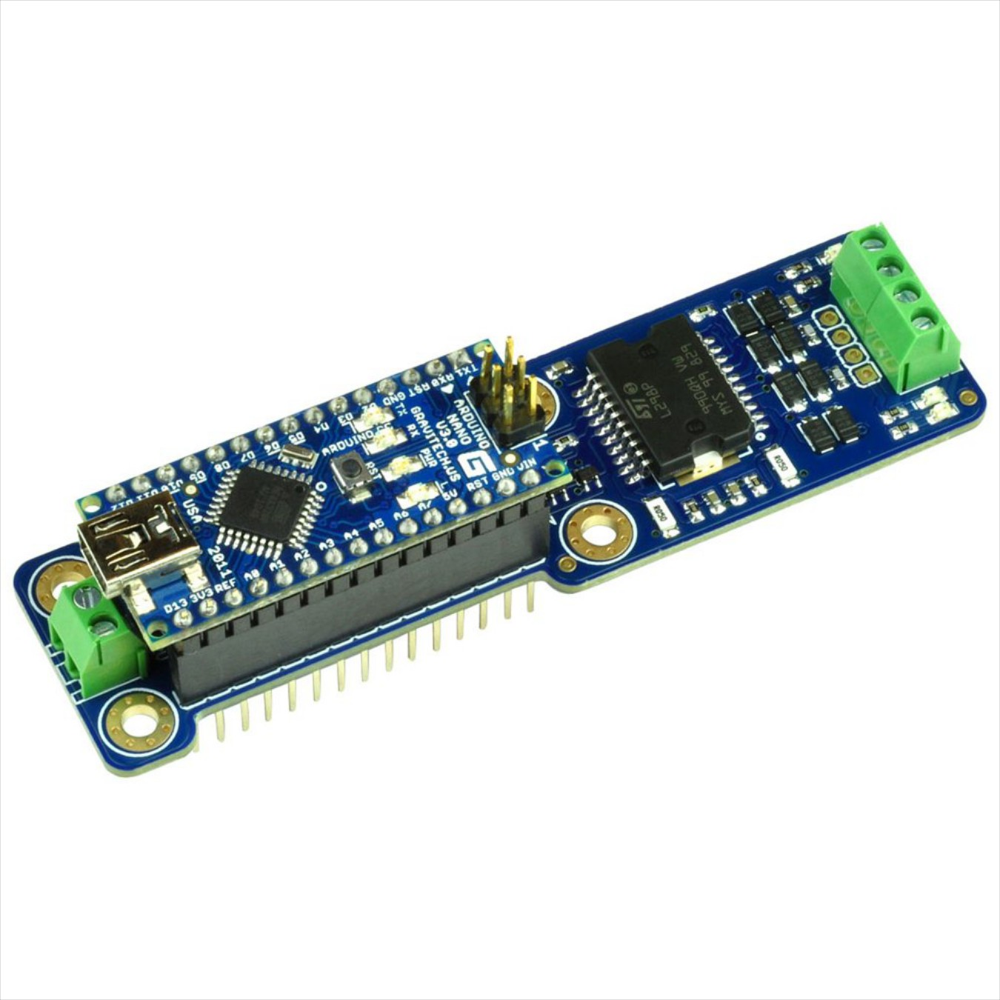
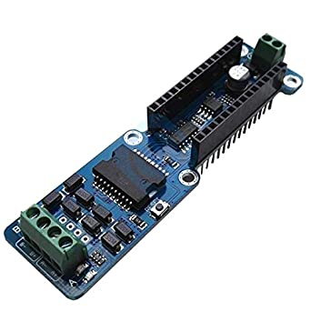

Arduino Nano Setup
{kind=link}
Tinkerer Level
The Arduino Nano is an Uno in disguise. It has the same processor, the same speed, the same (small) amount of memory. It’s just small. The disadvantage is that you can’t plug shields on top of it, but the benefit is that it can fit in a small box. You can always use all the same Uno shields, like the full-sized motor shield, you just have to solder or use wire jumpers to make the connections.
Note
Be sure to compare the Mega before using the Nano *TODO: add link to the comparison page*

Figure 60 Arduino Nano
What You need
Hardware
Arduino Nano (or clone)
Gravitech Nano Motor Shield (or clone, or any supported motor shield)
5V 1A Power Supply with Mini-USB for Arduino and Micro-USB for clones
12-14.5V 3-5A Power Supply for the motor shield
Barrel Connector to Screw Terminal Adapter if using the Nano Motor Shield
Wire of the approrate gauge for hookup
Computer to load the software (Windows, Mac, Linux, Rasperry Pi)
Software
A Controller (aka Throttle or CAB). More on this below.
Optional Hardware
Supported ESP8266 WiFi Option
Note
Before you order a Nano, be sure whether the headers are soldered or not. The Arduino brand is not soldered, while many of the Chinese sites give you the option. If you are a conductor, you probably don’t want to solder. If you are an Engineer, you may want to solder directly to the board and having to unsolder headers would be an unwelcome surprise.
Using the special Nano Motor Shield
 {kind=link}
{kind=link}
The above image shows a Gravitech Nano Motor Shield on the left and a clone from China on the right. The image on the left shows a Nano (separately purchased) plugged into the board. Search “Nano Motor Shield” or “Nano-L298p”. And remember to order a Nano from the same source or from someone else.
The Gravitech is available from RobotShop and direct from Gravitech for $29 US plus shipping. The Chinese clone costs beteen $9 and $18 (shipping included) from sources like AliExpress, eBay, Amazon, etc.
Note
There is a slight difference in the brand name Gravitech board and the board from the Chinese suppliers. There is a reset button on the Chinese board for one. We will post more information when we can test them side-by-side.
To use this board, you simple plug the nano into the motor shield (really a carrier board), upload the software and wire it to your track. It is just as easy as Using a Mega and an Arduino Motor shield.
*TODO: Finish the above and the below sections* *TODO: Show VCC power wiring option* *TODO: Show all the other Nano sized terminal boards and the ethernet board*
Wiring a Motor Shield
Tinkerer Level
You will need jumpers to connect the Nano to the Arduino Motor Shield
Wiring other Motor Boards
Tinkerer Level
As long as you know the pinouts, you can jumper wires to any motor shield you can connect to an Uno or Mega.